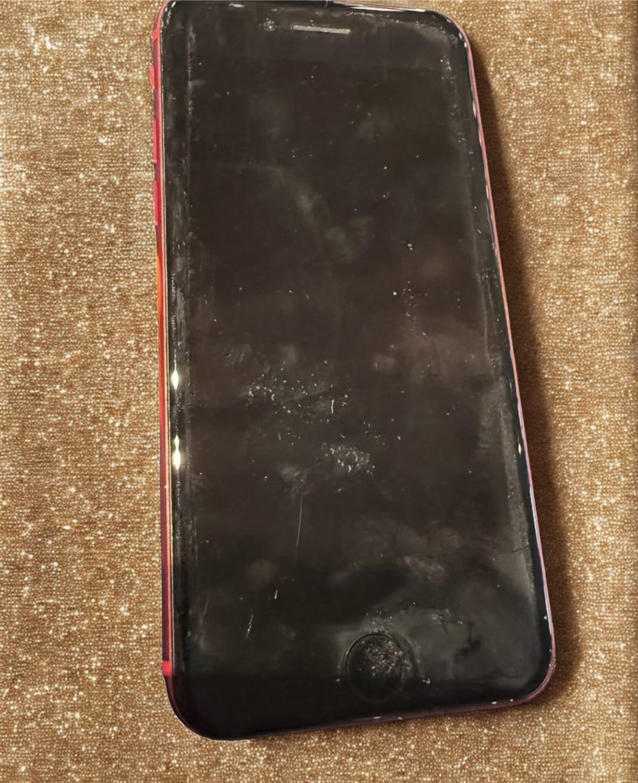
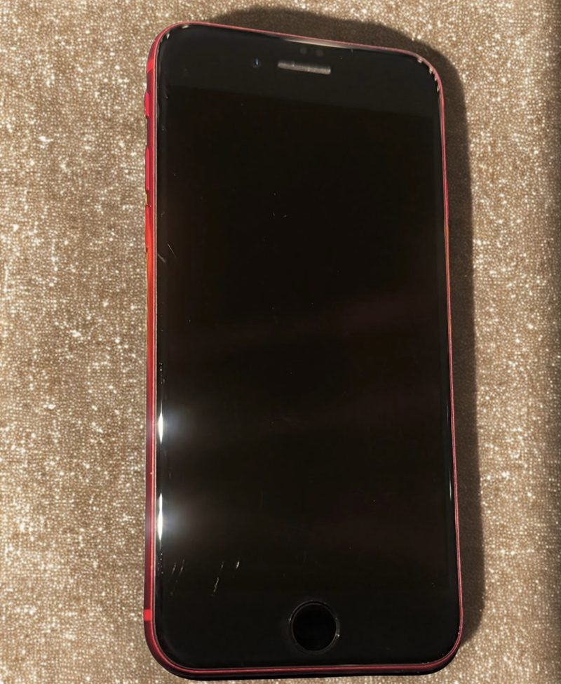

ワックスコーティング
5,500円
施工時間：約20分
- ワックス系（衝撃分散型）
- 表面の滑らかさによって、外部からの衝撃を受け流すように保護するタイプ
- 比較的手軽に施工しやすい
傷や汚れ、指紋の付着を抑えながら、
快適な使い心地と美しい状態を保ちやすくします。
日常使用による摩擦や外的要因の影響を軽減し、端末の外観維持をサポートします。
製品によっては、表面に付着した菌やウイルスに対して、増殖抑制を目的とした性能を有するものがあります。
皮脂や指紋などの汚れが付着しにくく、拭き取りやすい表面状態の形成を目的としています。
表面の滑り性が向上し、よりスムーズな操作性をサポートします。
光沢や透明感を損ないにくく、外観の維持をサポートします。
※抗菌・抗ウイルスなどの性能は製品によって異なります。
まず試したい・
手軽に施工したい方
ワックス
コーティング
よりしっかり
保護したい方
セラミック
コーティング
使い方やご希望を確認しながら、
合う方法をご案内します。


施工後は、表面のくすみ感が減り、ツヤ感のあるすっきりとした印象に。
※光の当たり方や撮影環境によって見え方が異なる場合があります。
コーティングは写真だけでは変化が伝わりにくい場合があります。
指すべり・汚れの拭き取りやすさ・表面のなめらかさなども体感ポイントです。